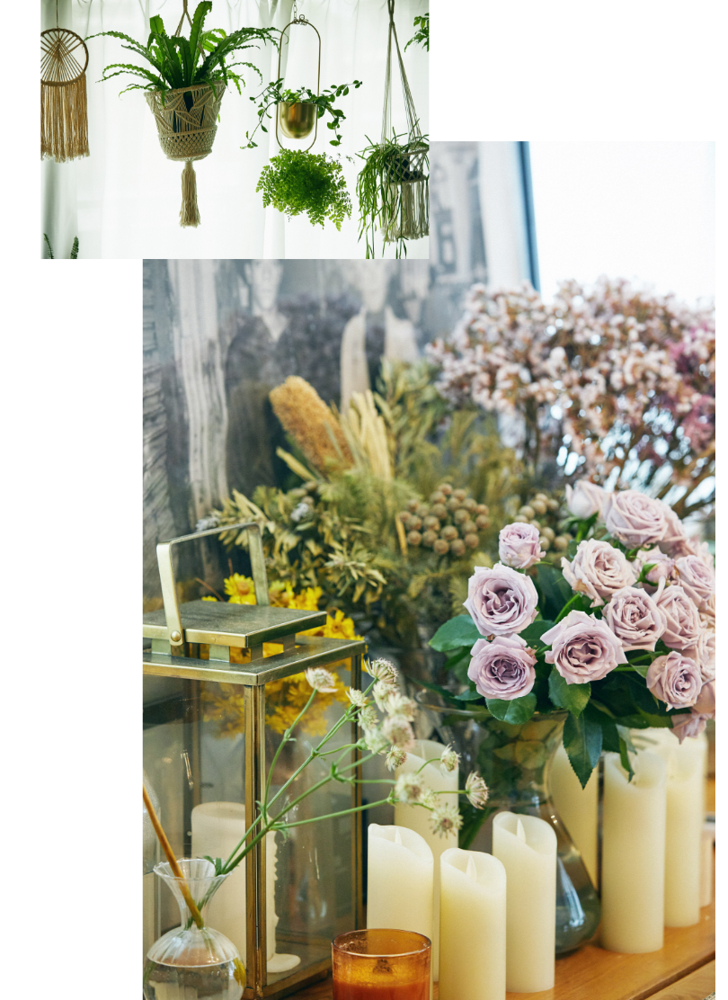

「きっかけは父からの『これからの時代は手に職があったほうがいい』という助言でした。滅多にそういうことを言う父ではなかったので、じゃあ一度やってみようと思い立って編集アシスタントをしながらネイルの学校に通うことになったのが私のストーリーの始まり。最初はあまりにも（ネイルに）ルールが多すぎて戸惑いました。人生で一番ルールにハマった時代かも（笑）。でもその時代にきちんと学んだベースがあるからこそ、今があるのだと思います」
学校卒業後にネイルサロンで働くものの、数年後に退職。渡米することに。そこで多くの刺激を受けたのだそう。
2022.08.17
ネイルアーティストとして、またアートディレクターとして多方面で活躍するHana4さん。彼女が作り出すものにはとてもポジティブなエネルギーを感じます。今回は、心身ともにクリーンで健康であることを心がけるHana４さんに、ネイルアートの魅力、そして自分の整え方、日々の生活で大切にしていることをお伺いしました。
「あまりの価値観の違いに驚きましたね。まず金融系の仕事ならスキンカラーといった、日本にありがちな暗黙的なルールがほとんどない。何かの雑誌を切り抜いて『こうしてください』という人も私はあまり出会わなかった。大体の人が『あなたはアーティストなんだからあなたに任せるわ、I trust you!』と言う感じ。それが衝撃的で、私もこうありたい、そう言うネイルアーティストを目指したいと思うようになったんです」

有言実行。今やHana4さんは独自性の高いネイルアーティストとして注目を集め、さらにはネイルの世界を飛び越えたアートの世界でも活躍するように。そんなHana4さんにきく、ネイルの魅力とは？
「私の場合のネイルは、アートとして表現する場合と、対面でお客様の手に施す場合の２通りがあります。前者の場合はピュアな自己表現ができるし横の広がりがとても広い。つまり描くのは爪じゃなく、紙でもコップでも鏡でもなんでもいいんです。ネイルアートのスキルって実はいろんなものに応用できる面白さがあるんです」
「私の場合のネイルは、アートとして表現する場合と、対面でお客様の手に施す場合の２通りがあります。前者の場合はピュアな自己表現ができるし横の広がりがとても広い。つまり描くのは爪じゃなく、紙でもコップでも鏡でもなんでもいいんです。ネイルアートのスキルって実はいろんなものに応用できる面白さがあるんです」
そして後者ですが、これは自分の想いではなく相手の想いを表現するものなので、お互いにとってよりメモリアルなものになる。例えば結婚式のネイルアートもそう。その時の思い出って10年経っても、20年経っても色褪せないわけで、私が施したネイルがその一部として記憶に残り続けるとしたら、それはとても素晴らしいこと。ネイルってそう言う存在になり得るものだと私は思って取り組んでいます」
Hana4さんの作品には常にポジティブなムードで溢れています。それはやはり意識していること？
「アートというと場合によっては難解なイメージを持つ人もいるかもしれませんが、私は基本的に気持ちのいいものを捉えていきたいと思っています。そこで大切なのが、常に自分のマインドを整えておくこと。個人的な創作活動はその時々の自分のコンディションに影響されやすいですから」
「アートというと場合によっては難解なイメージを持つ人もいるかもしれませんが、私は基本的に気持ちのいいものを捉えていきたいと思っています。そこで大切なのが、常に自分のマインドを整えておくこと。個人的な創作活動はその時々の自分のコンディションに影響されやすいですから」
Hana4さんが手がけたタペストリー。糸を染め、手織りで仕上げている。この状態では空と山だが、逆さまにすると山と海になる。


部屋にはHana4さんが手がけた絵があちこちに。モチーフは全て自然。特別なものではなく、普段の生活で目に入るものにインスピレーションを得ている。
「朝はできるだけ早く起きて、ゆっくり自分の時間を過ごす。7時前後にはヨガをして、体も一緒に整える。食べるものはできるだけ無添加でオーガニックなものを。身の回りもできるだけ清潔に。何も特別なことはしていませんが、そういう当たり前のことがとても大切なのだと思います」
「朝はできるだけ早く起きて、ゆっくり自分の時間を過ごす。7時前後にはヨガをして、体も一緒に整える。食べるものはできるだけ無添加でオーガニックなものを。身の回りもできるだけ清潔に。何も特別なことはしていませんが、そういう当たり前のことがとても大切なのだと思います」

「LG Stylerは前から気になっていたのですが、実際に使ってみて本当に快適。私はお洋服も大好きなのですが、中には洗いにくいものも多いし、けれどいちいちクリーニングに出してはコストがかかりすぎる。これが来てからはそんなストレスがなくなって、気持ち的にもすごく軽くなりました」
「大好きな帽子もこれなら気軽にケアできるし、クッションやソファカバーもこまめにケアできる。前は自分では気づきにくいペットの匂いも心配していたのですが、これがあれば安心ですね」

自身の原点である”ネイルアート”を軸に、アート／テキスタイル／イラストレーションなどの制作活動から、アートディレクションまで、国内外問わず幅広く活動するアーティスト。 完成度の高い極細な手描きのラインや、美しく細やかな色使いを得意とし、”背景にあるストーリーや思いをアートとして表現すること”を信条とする。 現在は、写真や旅や人から得たインスピレーションを元にアートを制作をしたり、 サスティナブルやオーガニックのライフスタイルから産まれたアップサイクルなアート活動など、自身の制作活動にも力を入れ、ファッションやビューティーの枠を超えた、様々な分野でアーティスト活動を行っている。
Interview & Text: Ryo Kikuchi